Within the first week of arriving in Manila, Philippines our team of six women were sent to stay at 'Friendly's Guesthouse', a Hostel in Metro Manila.
We were dropped off in a cab. realizing we needed dinner, we ventured out into the darkness of the street. Looking to our right we saw women behind glass wearing nothing.
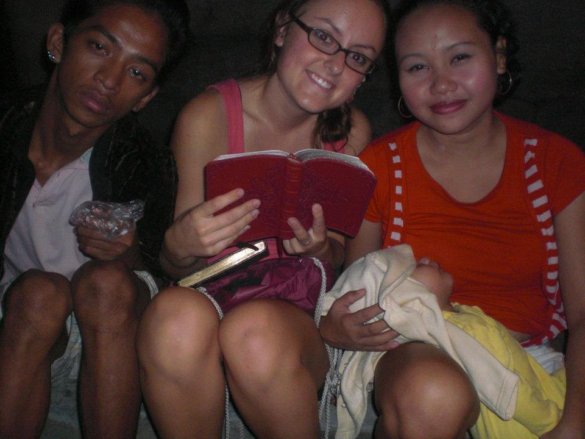
Friendly's Guesthouse was neighboring a brothel, we were staying in the Red Light District.
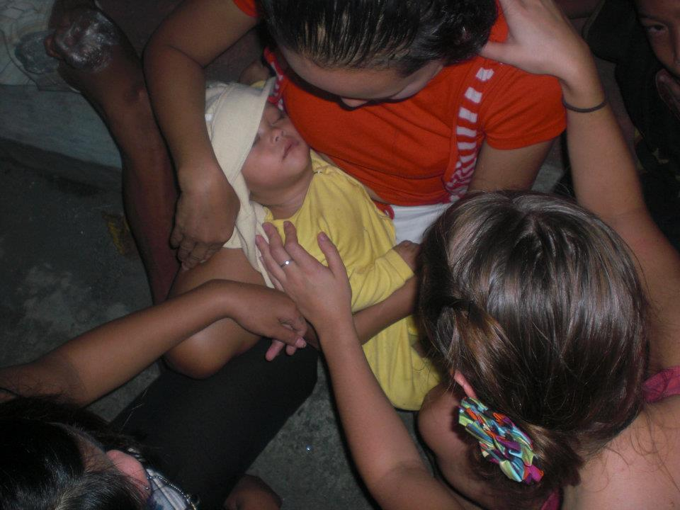
"Should we really be out looking for dinner right now?" Our pensive Canadian teammate asked.
"We are NOT women of fear, we are walking to the MALL and getting dinner." The 21-year-old woman from Virginia answered.
Arriving to the bright lights of a shopping center, we all took a deep breath.
The mall was larger than the Mall of America which neighbored my hometown in Minneapolis, Minnesota.
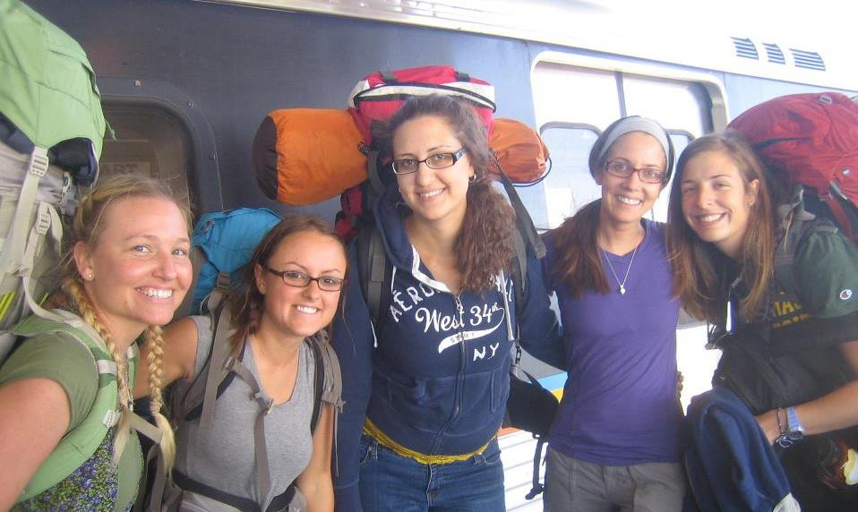
We found Filipino delicacies including Balut, picked up $5 worth of bread, and headed back to our dorm, filled with food and courage.
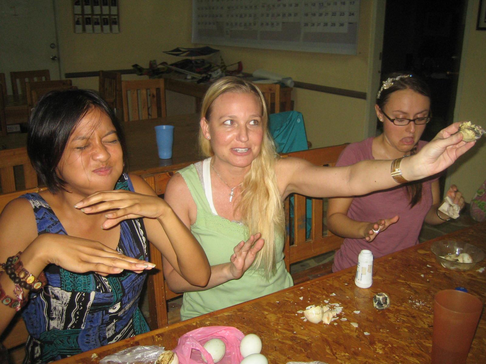
The next morning Brenda, a Filipino woman, picked us up in a Jeepney. Brenda was a local girl living inside the 'cemetery slums' of Manila.
We would come to find out that the poorest citizens had taken to living where no one else would – alongside the dead.
The sweet smile of this girl who lived inside the only free-standing structure in the graveyard, a simple white church, carried a joy that made us feel as if everything was normal.
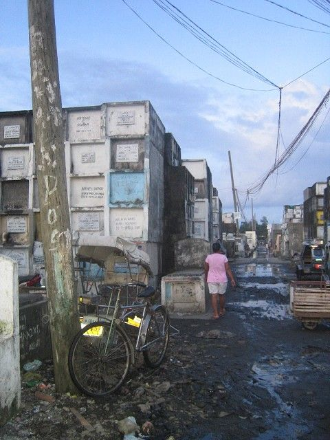
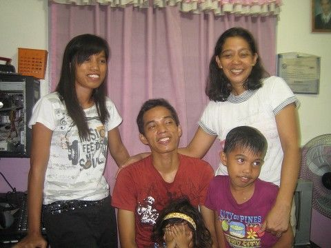
A week into our visits to Tondo, continually questioning how I ended up BACK in a dump where families live, we were offered a meal made with hose water that was laying in human feces.
We had been warned that the kindness of the Filipino people would offer us a meal, often being their only meal of the week.
Unsure how to navigate this, we accepted. Enjoying the delicacy of rice and gravy.
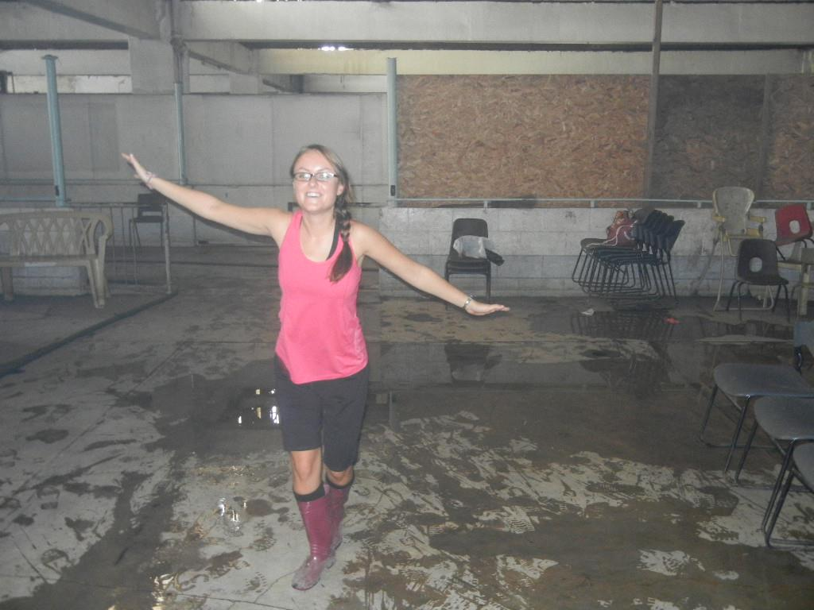
Not surprisingly we developed salmonella.
Sicker than we had ever been, we fearfully looked up ‘American’ hospitals in Manila.
Flagging down a cab next to the prostitutes' with their hands out, we filled up so many puke bags on the way over we could no longer say the word 'Bag' without vomiting through giggles.
The hospital was clean, a luxury I would later find out after an experience months later in a community Honduran hospital. This 'American' Filipino Hospital, still lacked a tenth of what we are fortunate to have in the United States.
With a lack of space, my teammate and I were forced to share a tiny hospital bed. Hours of misery later, the doctor came in, gave us something through our IVs and we found ourselves paralyzed from the neck down.
Terrified, we tried telling our doctor but even our voices were mute.
Finally in broken English they explained this was normal.
We both fell asleep.
Thankfully we woke up with the ability to once again feel our bodies.
24-hours later, I left with a pack of unknown medications, a bill for $52 and a sheet in TagLog with one word at the top 'Salmonella'
A deadly typhoon would hit a few days later and my teammate got the devastating call that her mother had died unexpectedly. Sitting on that little hostel bed weeping, we felt helpless.
After what would take an entire day, we made it across Manila to higher ground where the flooding from the Typhoon had not reached.
We spent the following week holed up in a small one room apartment with our grieving sister while we worked to get her on a plane back to her hometown in Canada.
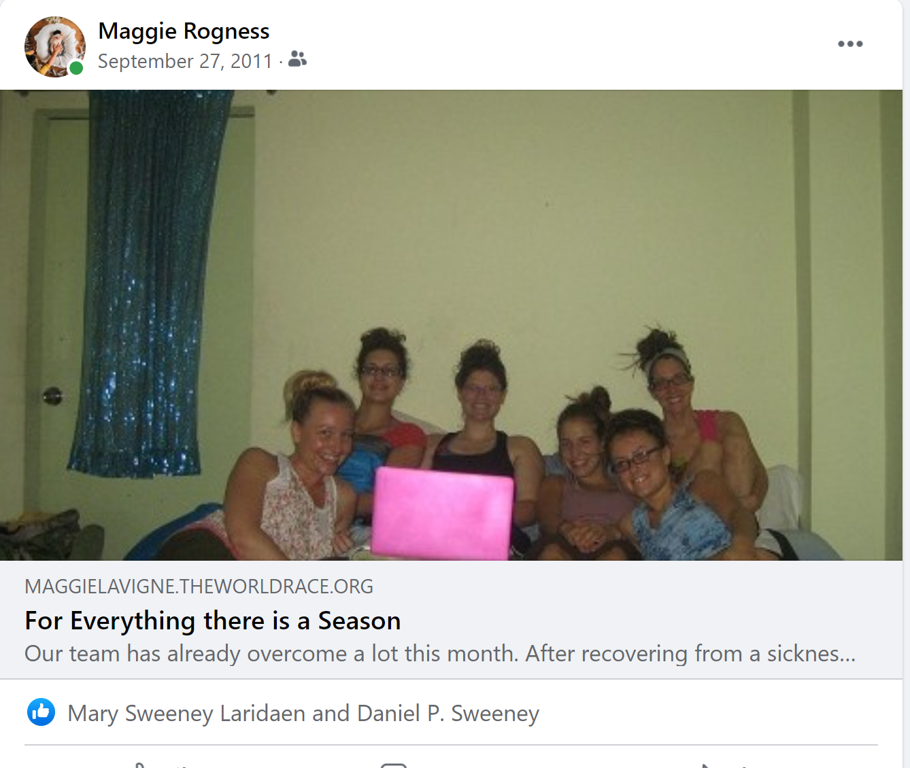
Taking a Jeepney to that international airport, dropping off our dear sister, we held her tight. You'll come back after the funeral? She nodded through red eyes.
While that month was traumatic, I would leave the Philippines with friendships I still have today.
A decade later, my 4-year old son was excited to send a box of Christmas gifts to Grace and her now three children.
He excitedly scrolled through items on the Target App and picked out Super Hero toys.
When I mentioned to Grace,
We picked out some fun super hero toys, what else would your kids enjoy?
She responded, "Pencils, Crayons, Paper, Pajamas, tooth brush. THANK YOU ATE MY KIDS WILL BE SO EXCITED"
I felt sheepish.
Of course they needed the basics, they didn't have electricity after all.
We still wrapped up some fun toys, including tooth brushes, super hero coloring books, pencils and crayons.
Three months later, that box still had not arrived. Reaching out with apologies and explaining my impatience with the postal service.
Grace simply said,
"No worries ATE! I am tracking it, it will arrive, I am sure of that."
After my near death experience surviving a postpartum hemorrhage/hyperemesis, I found myself panicking, "Am I going to die!"
Knowing she would be up, I messaged her simply saying, "Please Pray."
Realizing in that moment, I may have the financial resources to help but her prayers were powerful.
"ATE! I LOVE YOU, GOD LOVES YOU. GOD WILL PROTECT YOU!"
In the months post traumatic birth and pre-inauguration we have spoken nightly.
Me nursing a baby in the wee hours of the night, her up in the day time with her children, the time change no longer a barrier to my new mothers schedule, I have found peace in her nightly texts.
On Wednesday January 6th, a day that will surely go down in the history books as a dark day for America, my husband and I were mourning his grandma when I looked at my phone,
"Apparently the Capital is under siege?"
I said while sitting in the parking lot of where we had been married years before.
We were reminiscing on a moment when both of our grandmothers were still alive, throwing hopeful white roses down our wedding aisle.
"WHAT? No way!" --my husband the ever informed responded surprised.
My mama heart being worried, we drove out of the peaceful mountains into our sleepy town, Confederate flags still waving, anger shouted.
It was in my moment of fear that Ate Grace messaged,
"ATE MAGGIE ARE YOU OK!!! IT APPEARS YOUR PRESIDENT HAS GONE MAD!"
Yes. We are safe. We are fine. I love you."
Grace quickly sends back a picture of an American Flag immediately followed by the Filipino flag saying:
"We are sisters. Worlds apart yet worlds together."
To be continued....
'Cause if you never leave home, never let go
You'll never make it to the great unknown till you
Keep your eyes open, my love
So tell me you're strong, tell me you see
I need to hear it, can you promise me to
Keep your eyes open, my love'
NEEDTOBREATHE - Keep Your Eyes Open Songwriters: Nathaniel Rinehart / William Rinehart
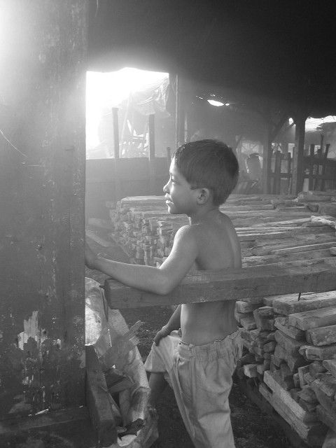
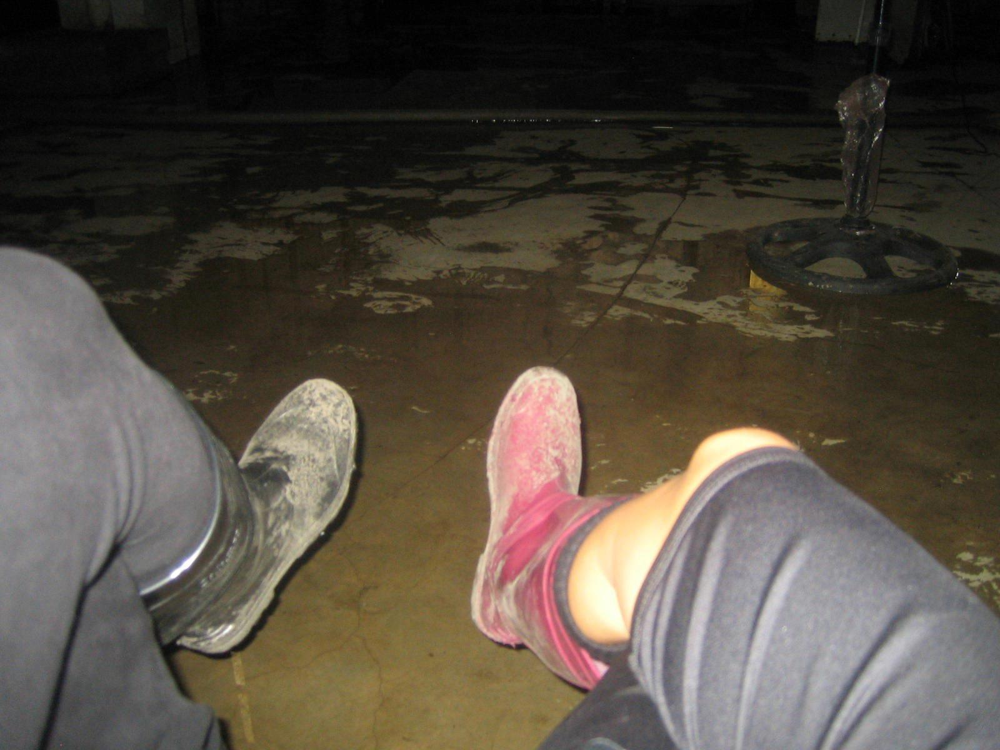
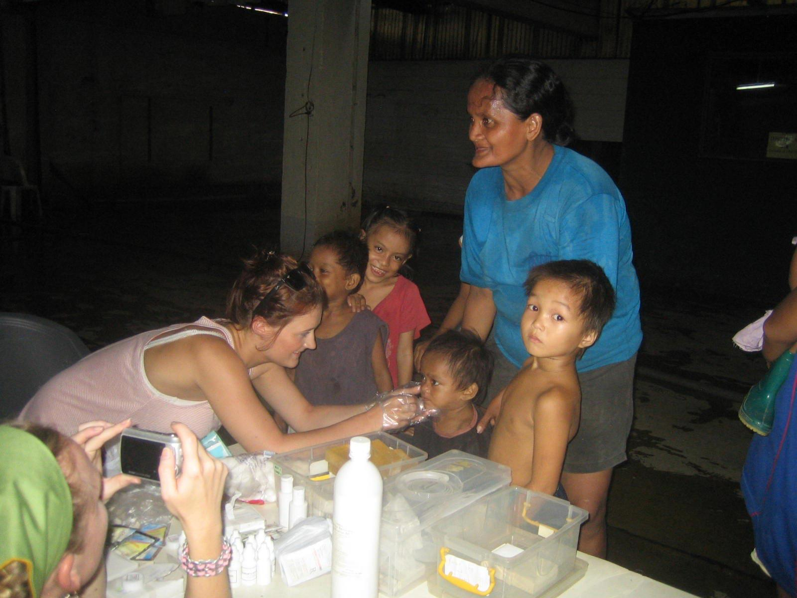
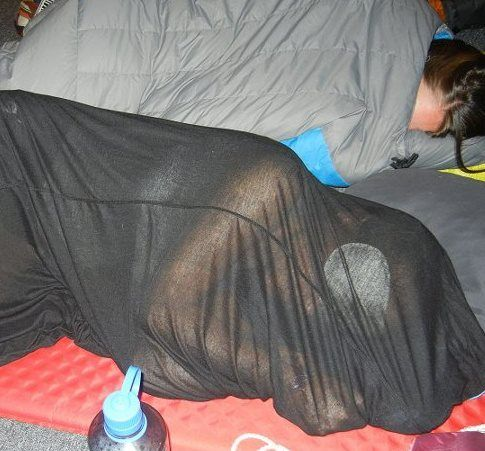
Authors note: I spoke directly to Grace and Brenda who were mentioned in this, they read the story and with approval, were thankful in my sharing.


 Lynzy Billing in Manila
Lynzy Billing in Manila
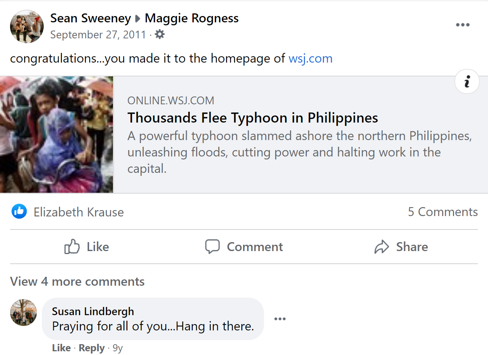
 Contributors to Wikimedia projects
Contributors to Wikimedia projects
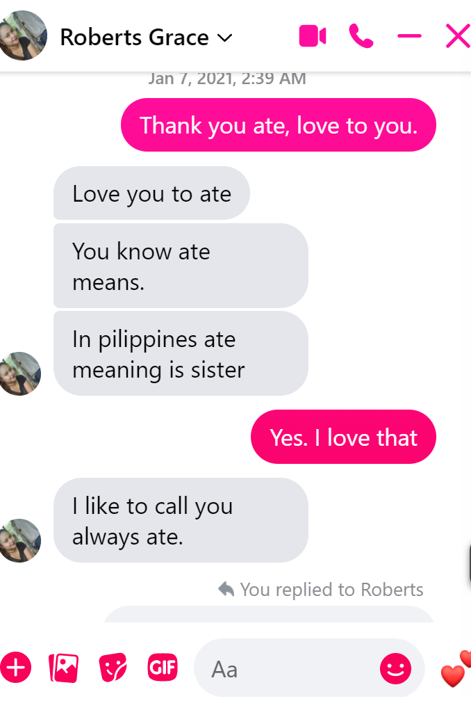